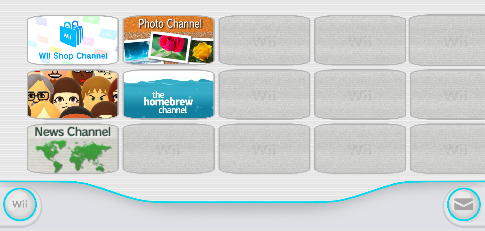
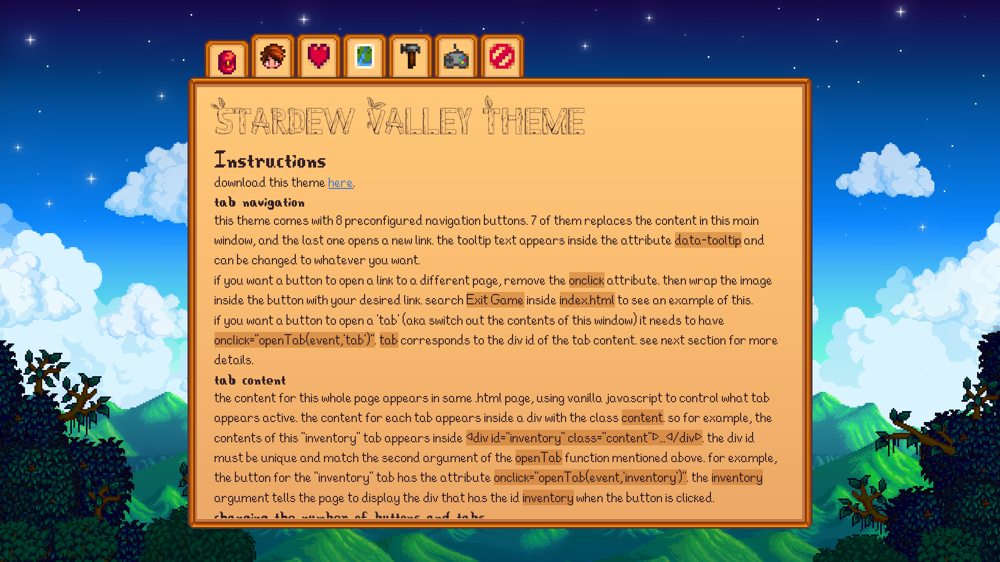
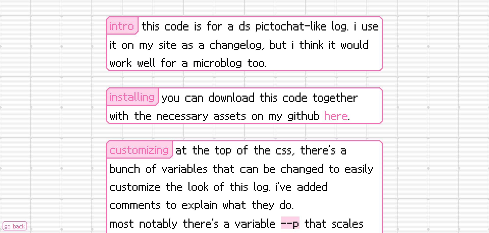
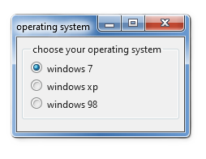
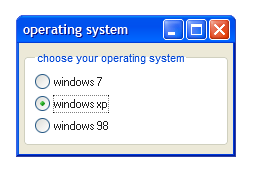
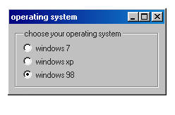

my codes
when viewing a demo page on my site, press Ctrl+U to view the source code then save it as an .html file. everything here is shared without a license and credit is not necessary.
i am not a web developer, just a self-taught hobbyist, so there's probably bugs and inefficiencies. if you have any issues or suggestions for improvements feel free to contact me!
wii menu media gallery
a premade wii menu theme for sharing images. has a built in lightbox, which can display fullsize images, iframes, videos from youtube and other sources, and inline html elements when a channel is clicked. view a preview here and download here.
stardew valley theme
a premade stardew valley theme. view a preview and instructions here.
pictochat theme
a premade pictochat theme. good for a changelog or microblog. view a preview and instructions here.
draggable and collapsible windows
add windows to your site that you can collapse and expand on click, as well as drag from the title bar using the draggabilly javascript library.
view instructions and a demo using the styling i have on my site plus some other styles i made here.

windows os css frameworks
if you use or are interested in using one of the windows operating system-like css frameworks 7.css, XP.css, or 98.css on your website, check out this code pen to see how to make windows draggable and collapsible. it has a css switcher so you can preview all three different frameworks. you can also view and download this page on my site to see a demo using 98.css.
